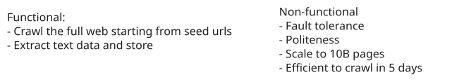
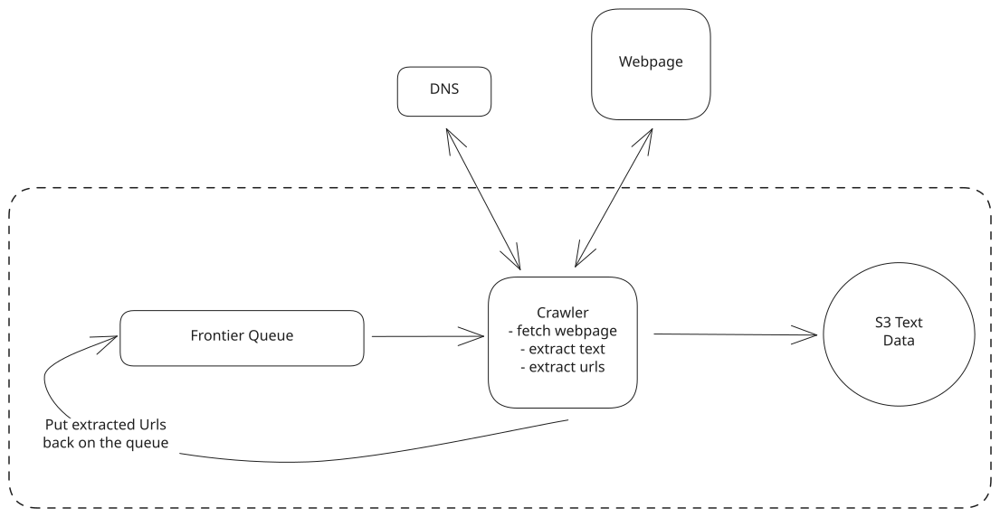
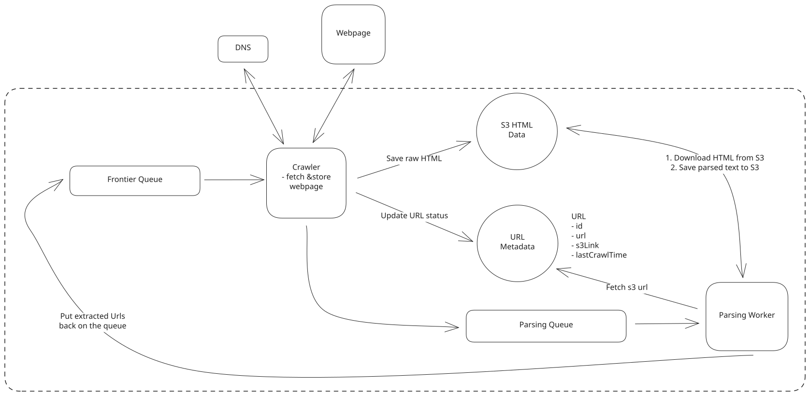
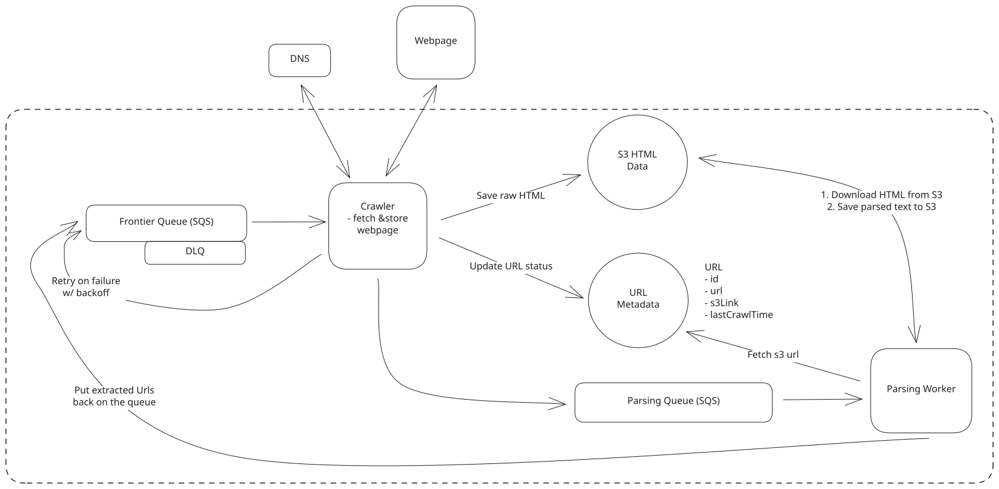
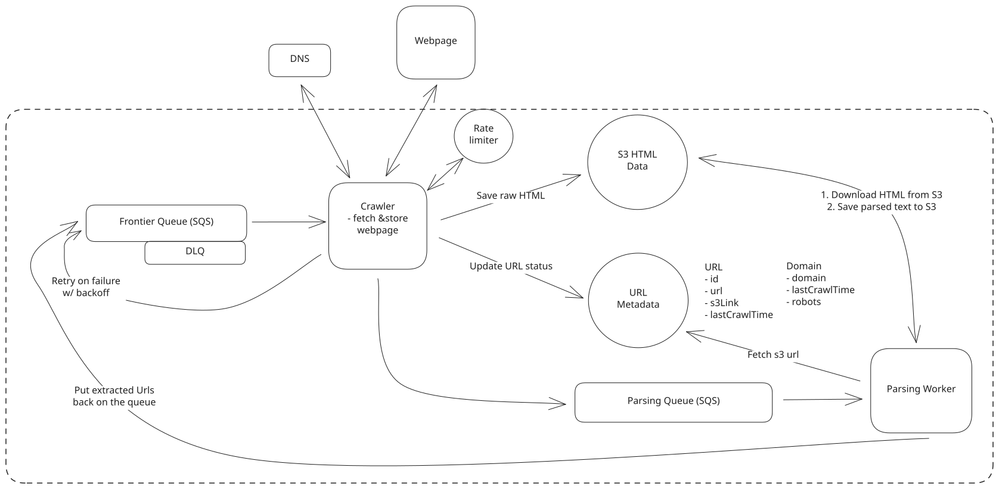
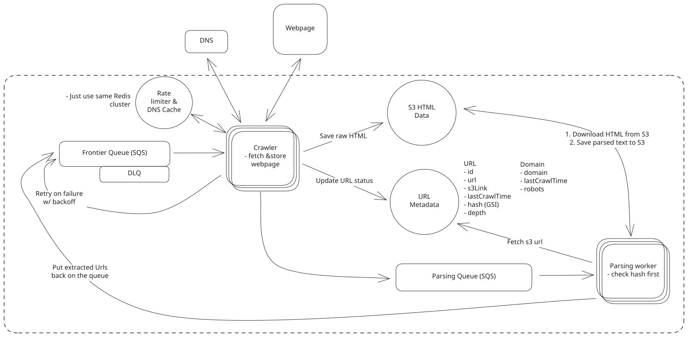

Common Problems
Web Crawler
Understanding the Problem
🕸️ What is a Web Crawler
A web crawler is a program that automatically traverses the web by downloading web pages and following links from one page to another. It is used to index the web for search engines, collect data for research, or monitor websites for changes.
Depending on the interview, the output of the traversed web pages may be used for different purposes. This can have some consequences on the overall design. For example, a search engine would need to index the data and rank it (using PageRank or other algorithms), while a company like OpenAI would dump the raw text from the pages into a database to be used to train LLMs (Large Language Models). Regardless of the use case, the interview is likely to focus on the crawling task—how can we efficiently crawl the web, extract the necessary data, and store it in a way that is easily accessible?
For our purposes, we'll design a web crawler whose goal is to extract text data from the web to train an LLM. This could be used by a company like OpenAI to train their GPT-4 model, Google to train Gemini, Meta to train LLaMA, etc.
Functional Requirements
Core Requirements
- Crawl the web starting from a given set of seed URLs.
- Extract text data from each web page and store the text for later processing.
Below the line (out of scope)
- The actual processing of the text data (e.g., training an LLM).
- Handling of non-text data (e.g., images, videos, etc.).
- Handling of dynamic content (e.g., JavaScript-rendered pages).
- Handling of authentication (e.g., login-required pages).
It's not possible to scrape the entire internet. Instead, we are going to scrape the vast majority of the web. Many small sites exist in the dark corners of the internet that we will not be able to reach. It may be worth clarifying this with your interviewer, but it's a general assumption of web crawling that you can't reach every page on the web.

Non-Functional Requirements
Before we jump into our non-functional requirements, it's important to ask your interviewer about the scale of the system. For this design in particular, the scale will have a large impact on the database design and the overall architecture.
We'll assume there are 10B pages on the web, with an average size of 2MB per page (this is the total transfer size including HTML and any inline resources, though the HTML alone is typically much smaller at ~30KB, but 2MB is a reasonable worst-case for planning bandwidth). We are also going to say that the company needs this data to be available for training 5 days after you start crawling.
It's commonly advised to start with back-of-the-envelope (BOE) calculations. However, I recommend delaying these calculations until they are necessary for solving a specific problem. This approach avoids unnecessary computations and focuses your efforts on aspects that directly impact your solution. You'll find examples of appropriate moments for estimations in our detailed discussions later. Regardless of what approach you take, just make sure to communicate with your interviewer so that you're on the same page.
With that in mind, let's document the non-functional requirements:
Core Requirements
- Fault tolerance to handle failures gracefully and resume crawling without losing progress.
- Politeness to adhere to robots.txt and not overload website servers inappropriately.
- Efficiency to crawl the web in under 5 days.
- Scalability to handle 10B pages.
Below the line (out of scope)
- Security to protect the system from malicious actors.
- Cost to operate the system within budget constraints.
- Compliance to adhere to legal requirements and privacy regulations.
Here's how it might look on your whiteboard:

Requirements
The Set Up
Planning the Approach
Given this system isn't a user-facing system, we'll instead focus on the abstract interface it has with the outside world and break down the data flow before proceeding to the high-level design. This will give us a good high-level picture of how the pieces should fit together which we can use as scaffolding for our design.
API or System Interface
For data processing system design questions like this one, it helps to start by defining the system's interface. This includes clearly outline what data the system receives and what it outputs, establishing a clear boundary of the system's functionality.
System Interface
- Input: Seed URLs to start crawling from.
- Output: Text data extracted from web pages.
Data Flow
The data flow is the sequential series of steps we'll cover in order to get from the inputs to our system to the outputs. Clarifying this flow early will help to align with our interviewer before the high-level design. For our crawler, we need to perform a sequence of steps before the page can be crawled:
- Take seed URL from frontier and request IP from DNS
- Fetch HTML from external server using IP
- Extract text data from the HTML.
- Store the text data in a database.
- Extract any linked URLs from the web pages and add them to the list of URLs to crawl.
- Repeat steps 1-5 until all URLs have been crawled.
Note that this is simple, we will improve upon as we go, but it's important to start simple and build up from there.
High-Level Design
For our high-level design, we will focus on getting a simple system up and running that satisfies our core functional requirements by simply following the data flow we outlined above. We will improve upon this design in the next section.

High Level Design
The core components of our high-level design are:
- Frontier Queue: The queue of URLs we need to crawl. We will start with a set of seed URLs and add new URLs as we crawl the web. The technology used could be something like Kafka, Redis, or SQS. We'll decide on the technology later.
- Crawler: Fetches web pages, extracts text data, and extracts new URLs to add to the frontier queue. In the next section we'll talk about how to scale this component to handle the 10B pages we need to crawl.
- DNS: Resolves domain names to IP addresses so that the crawler can fetch the web pages. There are interesting discussions to be had about how to cache DNS lookups, handle DNS failures, and ensure that we are not overloading DNS servers. Again, more on this later.
- Webpage: The external server that hosts the web pages we are crawling. We'll fetch the HTML from these servers and extract the text data.
- S3 Text Data: This is where we'll store the text data we extract from the web pages. We choose S3 as our blob storage because it is highly scalable and durable. It is designed to store large amounts of data cheaply. Other hosted storage solutions like Google Cloud Storage or Azure Blob Storage could also be used.
The dotted rectangle represents the boundary of our system. Everything inside the rectangle is part of our system, while everything outside is external to our system, like the web pages we are crawling.
It's wise to ask your interviewer about the seed URLs. Are they provided to you, or do you need to come up with them yourself? In almost all cases, the seed URLs will be provided to you. But this question shows that you are thinking holistically about the problem. If they're not, you can discuss a few strategies for coming up with them, like starting with the most popular search engines, news sites, social media platforms, and/or web directories.
Potential Deep Dives
That should have been relatively straightforward so far. Now for the fun part. We are going to go 1-by-1 through our non-functional requirements and discuss how we can improve our design to meet them.
This is why defining good non-functional requirements is so important -- especially for more senior candidates! So often I see candidates rush through the requirements and then look at me, the interviewer, wide eyed, unsure of what to do next after they have a simple design. If you've taken your time to define quality non-functional requirements, then you shouldn't run out of things to talk about until your system has met all functional and non-functional requirements, at which point, you've likely passed the interview!
1) How can we ensure we are fault tolerant and don't lose progress?
The first thing we should notice is that our crawler service is doing a lot. It's hitting DNS, fetching web pages, extracting text data, and extracting new URLs to add to the frontier queue. When we introduce politeness and efficiency, we'll find that it ends up doing even more. While the server can handle all of these tasks, it's not ideal from a fault tolerance perspective. If there is a failure in any single task, all progress will be lost.
Fetching web pages is the most likely task to fail. The internet is a messy place and there are many reasons why a fetch might fail. The server might be down, the connection might be slow, the page might be too large, etc.
To handle this, we should break the crawler service into smaller, pipelined stages. This way, if there is a failure in any stage, we can retry that stage without losing progress on the rest of the data. It also allows us to scale each stage independently and optimize each stage for its specific task.
Here's how we might break the crawler service into stages:
- URL Fetcher: This stage fetches the HTML of the web page from the external server. If there is a failure, we can retry the fetch without losing progress on the rest of the data. We will store the raw HTML in blob storage for later processing.
- Text & URL Extraction: This stage extracts the text data from the HTML and extracts any linked URLs to add to the frontier queue. There is an argument that text extraction and URL extraction should be separate stages, but these tasks are both simple and can be done in parallel without much overhead so I'd prefer to simplify the design and combine them into a single stage.
If you get a data processing question like this, your first thought should be to break the system down into smaller, pipelined stages. Pipelining allows you to isolate failures to a single stage and retry that stage without losing progress on the rest of the data. It also allows us to scale each stage independently and optimize each stage for its specific task.

Multi-Stage Pipeline
In order to make this work, we need to add some additional state. We'll add a Metadata DB (DynamoDB is fine here. PostgreSQL/MySQL could also work) with a table for URLs that have been fetched and processed. As a starting point, this will store the link to the blob storage where the HTML is stored and the link to the blob storage where the text data is stored. This is important because it is an anti-pattern to store the raw HTML in the queue itself. Queues are not optimized for large payloads and it would be expensive to store the HTML in the queue. Instead, the queue message will just be the id of the URL in the Metadata DB.
Importantly, this not only helps with fault tolerance but also allows us to be robust to changing requirements. You can imagine that the ML team consuming this data wants to change the text extraction process. A simple example could be including image alt text in the extracted text. If we have a separate stage for text extraction, we can easily swap out the text extraction function without needing to redo the expensive part of fetching the web pages.
What about if we fail to fetch a URL?
As mentioned, URL fetching is clearly the most likely task to fail. Many websites may no longer exist, may have moved, or may be down. Others may just be slow or experiencing momentary down time. To confirm, we'll want to retry on failures. Here is how we might handle this:
Approach
The easiest (and worst) thing we could do is to just wait a few seconds using an in-memory timer and try again.
Challenges
Beyond any issues with politeness, which we will address next, this isn't robust because if a crawler were to go down, we would lose the timer. It is also very likely that the fetch won't succeed in just a few more seconds. We'll need to be smarter and implement some sort of exponential backoff.
Approach
Kafka does not support retries out of the box, but we could implement them ourselves. We could have a separate topic for failed URLs and a separate service that reads from this topic and retries the fetch with exponential backoff. In order to know how much to backoff, we could store the time that the next fetch should occur in the message itself. When a consumer reads a message, it will check the time and if it is in the future, it will wait until that time to retry the fetch.
Challenges
This can work, it's just complex to implement and maintain. Fortunately for us, there are services that do this for us out of the box.
Approach
SQS doesn't have a built-in exponential backoff setting, but it provides the primitives to build one cleanly. The key mechanism is the visibility timeout: when a consumer receives a message but doesn't delete it, the message becomes visible again after the visibility timeout expires (default 30 seconds, configurable up to 12 hours).
To implement exponential backoff, we use the ChangeMessageVisibility API to dynamically adjust the timeout based on the ApproximateReceiveCount attribute, which tracks how many times a message has been received. For example, after each failed fetch, we calculate the next visibility timeout as and call ChangeMessageVisibility to set it. This keeps the message hidden until we're ready to retry.
Challenges
We don't want to retry indefinitely. After a certain number of failures (configured via the queue's redrive policy using maxReceiveCount), the message is automatically moved to a dead-letter queue (DLQ). For our purposes, we'll consider the site offline after 5 retries.
What happens if a crawler goes down?
The answer is simple: we spin up a new one. We'll just have to make sure that the half-finished URL is not lost.
Good news is the URL will stay in the queue until it is confirmed to have been fetched by a crawler and the HTML is stored in blob storage. This way, if a crawler goes down, the URL will be picked up by another crawler and the process will continue. The actual mechanism for accomplishing this is different per technology. I'll outline, at a very high level, how two popular technologies, Kafka and SQS, might handle this:
Apache Kafka:
- Kafka retains messages in a log and does not remove them even after they are read. Crawlers track their progress via offsets, which are not updated in Kafka until the URL is successfully fetched and processed. If a crawler fails, the next one picks up right where the last one left off, ensuring no data is lost.
SQS:
- With SQS, messages remain in the queue until they are explicitly deleted. A visibility timeout hides a message from other crawlers once it's fetched. If the crawler fails before confirming successful processing, the message will automatically become visible again after the timeout expires, allowing another crawler to attempt the fetch. On the other hand, once the HTML is stored in blob storage, the crawler will delete the message from the queue, ensuring it is not processed again.
Of course, the same applies if a parsing worker goes down. The URL will remain in the queue until it is confirmed to have been processed and the text data is stored in blob storage.
Given SQS's visibility timeout mechanism (which makes implementing exponential backoff straightforward), automatic dead-letter queue support, and managed scaling, we'll use SQS for our system.

SQS with Retry and DLQ
When it comes to choosing a technology, there is usually no right or wrong answer. It's all about trade-offs and your ability to justify your decision. Additionally, it's totally reasonable that you would not know the specifics of how Kafka or SQS handle retries. If that's the case, this may not be a place where you choose to go deep.
2) How can we ensure politeness and adhere to robots.txt?
First thing first, what is politeness and what is a robots.txt file?
Politeness refers to being respectful with the resources of the websites we are crawling. This involves ensuring that our crawling activity does not disrupt the normal function of the site by overloading its servers, respecting the website's bandwidth, and adhering to any specific restrictions or rules set by the site administrators.
robots.txt is a file that websites use to communicate with web crawlers. It tells crawlers which pages they are allowed to crawl and which pages they are not. It also tells crawlers how frequently they can crawl the site. An example of a robots.txt file might look like this:
User-agent: *
Disallow: /private/
Crawl-delay: 10The User-agent line specifies which crawler the rules apply to. In this case, * means all crawlers. The Disallow line specifies which pages the crawler is not allowed to crawl. In this case, the crawler is not allowed to crawl any pages in the /private/ directory. The Crawl-delay line specifies how many seconds the crawler should wait between requests. In this case, 10 seconds.
Crawl-delay is not part of the official Robots Exclusion Protocol standard and is ignored by some major crawlers (notably Googlebot). However, respecting it demonstrates good crawling etiquette and is appropriate for our use case where we want to be polite to website operators.
To ensure politeness and adhere to robots.txt, we will need to do two things:
- Respect robots.txt: Before crawling a page, we will need to check the robots.txt file to see if we are allowed to crawl the page. If we are not allowed to crawl the page, we will need to skip it. We will also need to respect the Crawl-delay directive and wait the specified number of seconds between requests.
- Rate limiting: We will want to limit the number of requests we make to any single domain. The industry standard is to limit the number of requests to 1 request per second.
Let's start with the first point: respecting robots.txt.
First, we need to save the robots.txt file for each domain we crawl. In the interview, you may have a discussion about how regularly you should check for updates to this file. For simplicity, we'll just assume it's a one-time download.
With the robots.txt file saved, we can check it before crawling a page. We need to consider two things:
- Is the crawler allowed to crawl the page? Easy, just check the Disallow directive and confirm that this page is not disallowed. If it is, we can ack the message (remove it from the queue) and move on to the next URL.
- How long should we wait between requests? This is a bit more complex. We need to check the Crawl-delay directive and wait the specified number of seconds between requests.
To handle the crawl delay, we need to introduce some additional state. We can add a Domain table to our Metadata DB that stores the last time we crawled each domain. This way, we can check the Crawl-delay directive and wait the specified number of seconds before crawling the next page. If we pull a URL off the queue for a domain that we have recently crawled, we use SQS's ChangeMessageVisibility API to extend the visibility timeout, deferring when the message becomes available again.
Since we have multiple crawlers running in parallel, two crawlers could pull URLs from the same domain simultaneously and both see a stale "last crawl time." To prevent this, we can use an atomic operation (like Redis SET with NX and a TTL matching the crawl delay) to acquire a per-domain lock before crawling. If a crawler can't acquire the lock, it defers the message using ChangeMessageVisibility.
DelaySeconds only applies when sending a new message. For messages already in-flight (which is our case), use ChangeMessageVisibility to defer reprocessing. Visibility timeout can be extended up to 12 hours per message.
To make this clear, the steps would be:
- Fetch the robots.txt file for the domain.
- Parse the robots.txt file and store it in the Metadata DB.
- When we pull a URL off the queue, check the rules stored in the Metadata DB for that domain.
- If the URL is disallowed, ack the message and move on to the next URL.
- If the URL is allowed, check the Crawl-delay directive.
- If the Crawl-delay time has not passed since the last crawl, use ChangeMessageVisibility to extend the visibility timeout and defer reprocessing.
- If the Crawl-delay time has passed, crawl the page and update the last crawl time for the domain.
What about rate limiting?
We also need to respect the rate limit of 1 domain a second. With multiple crawlers, this can get a little trickier since, in theory, all N crawlers could be hitting a single domain at the same time.
We can implement a global, domain-specific rate limiting mechanism using a centralized data store (like Redis) to track request counts per domain per second. Each crawler, before making a request, checks this store to ensure the rate limit has not been exceeded. We'll use a sliding window algorithm to track the number of requests per domain per second. If the rate limit has been exceeded, the crawler will wait until the next second to make the request.
A potential issue with this method is the risk of synchronized behavior among multiple crawlers. If several crawlers are waiting to make requests and simultaneously retry when the rate limit window resets, they'll all try and only one will succeed and the process will repeat.
Fortunately, there is a relatively simple solution to this problem: jitter. By introducing a small amount of randomness to the rate-limiting algorithm, we can prevent synchronized behavior among crawlers. This jitter can be implemented by adding a random delay to each crawler's request, ensuring that they do not all retry at the same time.

Robots.txt and Rate Limiting
3) How to scale to 10B pages and efficiently crawl them in under 5 days?
I generally suggest you save any scaling discussion until the end of the interview. This is because you'll have a clearer picture of the full system and can make more informed decisions about where to scale. For example, had scaling been our first deep dive we would have missed bottlenecks like the parser workers introduced in subsequent deep dives.
Since scalability and efficiency go hand in hand, we'll tackle these two requirements together.
First, let's talk about how we can scale the crawler to handle 10B pages in under 5 days. Our one lonely machine won't be able to do this alone, so we need to parallelize the crawling process. But, how many crawler machines will we need?
To reason about this, we should recognize that this is an I/O intensive task. If we take our average page size of 2MB which we gathered during our non-functional requirements, we can estimate where our bandwidth will be capped.
In the AWS ecosystem, a network-optimized instance (like a c6in.32xlarge or c7gn.16xlarge) can handle up to 200 Gbps. This means that a single instance, from a network perspective, can handle about 200 Gbps / 8 bits/byte / 2MB/page ≈ 12,500 pages/second. That's a ton, but it's likely not actually possible.
Now there is no way we can make use of all this bandwidth maximally. There will be practical limitations on the number of requests we can make per second dictated by factors like server response latency, DNS resolution, rate limiting, politeness, retries, etc.
We get very hand-wavy here, but let's say that we can utilize 30% of the available bandwidth. This would give us 12,500 pages/second * 30% = 3,750 pages/second.
You might wonder how we can achieve thousands of pages per second when we're rate-limited to 1 request/second per domain. The key insight is that we're crawling millions of different domains in parallel. Each crawler maintains thousands of concurrent connections to different sites simultaneously, so while any single domain sees at most 1 request/second, the aggregate throughput across all domains is very high.
To estimate the total number of high powered machines we need, we can divide the total number of pages by the number of pages we can crawl per second. This gives us 10,000,000,000 pages / 3,750 pages/second ≈ 2,666,667 seconds ≈ 30.9 days for a single machine. This scales linearly, so we can divide this by the number of machines to get the total time: 30.9 days / 8 machines ≈ 3.9 days. This is under our 5-day requirement, so we're good to go.
There are a lot of assumptions in these estimations and, in reality, you would need to do load testing to get a more accurate number. But for an interview, it's less about being right and more about showing that you can reason through the problem.
What about the parser workers?
This should be easier, as the task is relatively straightforward. They just need to download the HTML from blob storage, extract the text data, and store it back in blob storage. We need to make sure this keeps pace with our crawlers. Rather than estimating how many we need, we can just scale this up and down dynamically based on the number of pages in the Further Processing Queue. This could be via Lambda functions, ECS on Fargate, or other auto-scaling compute options.
Don't forget about DNS!
DNS is one potential bottleneck that is often overlooked. You might wonder why we call it out explicitly, since tools like curl handle DNS automatically. The issue is scale. At thousands of requests per second across millions of unique domains, DNS resolution becomes a real bottleneck. Each lookup for a new domain requires multiple network round-trips through the DNS hierarchy, and early web crawler research (like the Mercator crawler paper) found that DNS lookups accounted for up to 70% of each thread's elapsed time before they built a custom resolver.
If we're using a 3rd party DNS provider, we'll want to make sure they can handle the load. Most 3rd party providers have rate limits that can be increased by throwing money at them. While this is certainly an option, especially given our time constraints, it's worth considering other optimizations:
- DNS caching: We can cache DNS lookups in our crawlers to reduce the number of DNS requests we need to make. This way all URLs to the same domain will reuse the same DNS lookup.
- Multiple DNS providers: We can use multiple DNS providers and round-robin between them. This can help distribute the load across multiple providers and reduce the risk of hitting rate limits.
The multiple DNS providers approach was suggested by a Staff candidate in an interview I conducted fairly recently. I really liked this idea. It's simple, but I love how practical it is. It breaks out of the "academic answer" and shows that the candidate is thinking about real-world constraints and solutions.
Now let's focus more on efficiency.
To be as efficient as possible, we will want to ensure we don't waste our time crawling pages that have already been crawled.
We can first check if a URL has already been crawled by checking the Metadata DB before putting it on the queue. If the URL already exists in our URL table, we skip it. This is our first line of defense against redundant work: URL-level deduplication.
But URL-level dedup isn't enough. Different URLs can serve identical content. For example, http://example.com and http://www.example.com might return the same page. It's also common for totally different domains to have exactly the same content (a maybe depressing fact about the internet). For these cases, we can't just compare the URLs. Instead, we need content-level deduplication: we hash the page content after fetching it and compare that hash to what we've seen before. If we've already stored this exact content, we skip the expensive parsing step. Let's discuss a couple options:
Approach
We could hash the content of the page and store this hash in our URL table in the Metadata DB. When we fetch a new URL, we hash the content and compare it to the hashes in the Metadata DB. If we find a match, we skip the page. To make sure the look up is fast, we need to build an index on the hash column in the Metadata DB. This would allow us to quickly look up the hash of the new URL and see if it already exists in the DB.
Challenges
While the index will become large and may slow down writes, this would be overly pessimistic. Modern databases are quite efficient at handling indexes, even large ones. While it's true that maintaining an index incurs overhead, this overhead is generally well-optimized in modern systems so it's safe to overlook this concern.
Approach
Another possible approach is to use a Bloom filter. A Bloom filter is a probabilistic data structure that allows us to test whether an element is a member of a set. It can tell us definitively if an element is not in the set, but it can only tell us with some probability if an element is in the set. This is perfect for our use case. We can use a Bloom filter to store the hashes of the content of the pages we have already crawled. When we fetch a new URL, we hash the content and check the Bloom filter. If the hash is not in the Bloom filter, we know definitively that we haven't crawled this page before. If the hash is in the Bloom filter, we've probably crawled this page before and can skip it (with a small chance of false positive).
From a technology perspective, we can use Redis with the RedisBloom module (part of Redis Stack) to store the Bloom filter. RedisBloom provides native commands like BF.ADD and BF.EXISTS for this purpose. If using a Redis service without RedisBloom, you could implement a Bloom filter using Redis bit operations or store it in application memory.
Challenges
The main challenge with a Bloom filter is that it can give false positives. This means that it might tell us that we have crawled a page when we actually haven't. We could argue that this is an acceptable trade-off for the performance benefits and can configure our bloom filter to reduce the probability of false positives by increasing the size of the filter and the number of hash functions used.
To be honest, I think the bloom filter here is a bit overkill. It's a cool data structure, and it's fun to talk about in an interview, but I think the index approach is more practical. It's simpler, and modern DB indexes are quite efficient. I note this as a solution more because candidates always bring it up. I assume this is because it's a common solution in the literature.
Last thing! Watch out for crawler traps
Crawler traps are pages that are designed to keep crawlers on the site indefinitely. They can be created by having a page that links to itself many times or by having a page that links to many other pages on the site. If we're not careful, we could end up crawling the same site over and over again and never finish.
Fortunately the solution is pretty straightforward: we can implement a maximum depth for our crawlers. Here, "depth" means the number of link hops from a seed URL, not the number of path segments in the URL. A seed URL starts at depth 0, any page linked from the seed is depth 1, pages linked from those are depth 2, and so on. We add a depth field to our URL table in the Metadata DB and increment it each time we follow a link. If the depth exceeds a certain threshold (say 15-20), we stop crawling that branch. This prevents us from getting stuck in a crawler trap.

Scale and Efficiency
Some additional deep dives you might consider
Of course, I can't cover everything in this guide. Here are a few additional deep dives you might consider on your own:
- How to handle dynamic content: Many websites are built with JavaScript frameworks like React or Angular. This means that the content of the page is not in the HTML that is returned by the server, but is instead loaded dynamically by the JavaScript. To handle this, we'll need to use a headless browser like Puppeteer to render the page and extract the content.
- How to monitor the health of the system: We'll want to monitor the health of the system to ensure that everything is running smoothly. We can use a monitoring service like Datadog or New Relic to monitor the performance of the crawlers and parser workers and to alert us if anything goes wrong.
- How to handle large files: Some websites have very large files that we may not want to download. We can send an HTTP HEAD request first to check the Content-Length header and skip files that exceed a threshold (say 10MB) without downloading the full content.
- How to handle continual updates: While our requirements are for a one-time crawl, we may want to consider how we would handle continual updates to the data. This could be that we plan to re-train the model every month or that our crawler is for a search engine that needs to be updated regularly. I'd suggest adding a new component "URL Scheduler" that is responsible for scheduling URLs to be crawled. So rather than putting URLs on the queue directly from the parser workers, the parser workers would put URLs in the Metadata DB and the URL Scheduler would be responsible for scheduling URLs to be crawled by using some logic based on last crawl time, popularity, etc.
- How to implement priority crawling: If you need to prioritize certain URLs (e.g., popular domains first), you can use multiple SQS queues with different priorities and have crawlers poll the high-priority queue first. Kafka doesn't natively support priority-based consumption, but you can achieve a similar effect with separate topics per priority level.
What is Expected at Each Level?
Ok, that was a lot. You may be thinking, “how much of that is actually required from me in an interview?” Let’s break it down.
Mid-level
Breadth vs. Depth: A mid-level candidate will be mostly focused on breadth (80% vs 20%). You should be able to craft a high-level design that meets the functional requirements you've defined, but many of the components will be abstractions with which you only have surface-level familiarity.
Probing the Basics: Your interviewer will spend some time probing the basics to confirm that you know what each component in your system does. For example, if you add an Queue, expect that they may ask you what it does and how it works (at a high level). In short, the interviewer is not taking anything for granted with respect to your knowledge.
Mixture of Driving and Taking the Backseat: You should drive the early stages of the interview in particular, but the interviewer doesn’t expect that you are able to proactively recognize problems in your design with high precision. Because of this, it’s reasonable that they will take over and drive the later stages of the interview while probing your design.
The Bar for Web Crawler: For this question, an E4 candidate will be able to understand the high-level data flow and implent a simple system (like our high-level design) which can effectively crawl the web. They should be able to discuss the basics of how to handle politeness and adhere to robots.txt. They should have some idea of how to scale the system, but any depth on queueing technologies and rate limiting is not necessarily expected.
Senior
Depth of Expertise: As a senior candidate, expectations shift towards more in-depth knowledge — about 60% breadth and 40% depth. This means you should be able to go into technical details in areas where you have hands-on experience. It's crucial that you demonstrate a deep understanding of key concepts and technologies relevant to the task at hand.
Advanced System Design: You should be familiar with advanced system design principles. For example, knowing how how queues or caching works is essential. The interviewer knows you know the small stuff (REST API, data normalization, etc) so you can breeze through that at a high level so you have time to get into what is interesting. Your ability to navigate these advanced topics with confidence and clarity is key.
Articulating Architectural Decisions: You should be able to clearly articulate the pros and cons of different architectural choices, especially how they impact scalability, performance, and maintainability. You justify your decisions and explain the trade-offs involved in your design choices.
Problem-Solving and Proactivity: You should demonstrate strong problem-solving skills and a proactive approach. This includes anticipating potential challenges in your designs and suggesting improvements. You need to be adept at identifying and addressing bottlenecks, optimizing performance, and ensuring system reliability.
The Bar for Web Crawler: For a senior candidate, the bar is higher. They should be able to discuss the high-level design and then dive into the details of how to handle politeness and adhere to robots.txt. They should be able to discuss how to scale the system and how to efficiently crawl pages within the 5-day time frame.
Staff+
Emphasis on Depth: As a staff+ candidate, the expectation is a deep dive into the nuances of system design — I'm looking for about 40% breadth and 60% depth in your understanding. This level is all about demonstrating that, while you may not have solved this particular problem before, you have solved enough problems in the real world to be able to confidently design a solution backed by your experience.
You should know which technologies to use, not just in theory but in practice, and be able to draw from your past experiences to explain how they’d be applied to solve specific problems effectively. The interviewer knows you know the small stuff (REST API, data normalization, etc) so you can breeze through that at a high level so you have time to get into what is interesting.
High Degree of Proactivity: At this level, an exceptional degree of proactivity is expected. You should be able to identify and solve issues independently, demonstrating a strong ability to recognize and address the core challenges in system design. This involves not just responding to problems as they arise but anticipating them and implementing preemptive solutions. Your interviewer should intervene only to focus, not to steer.
Practical Application of Technology: You should be well-versed in the practical application of various technologies. Your experience should guide the conversation, showing a clear understanding of how different tools and systems can be configured in real-world scenarios to meet specific requirements.
Complex Problem-Solving and Decision-Making: Your problem-solving skills should be top-notch. This means not only being able to tackle complex technical challenges but also making informed decisions that consider various factors such as scalability, performance, reliability, and maintenance.
Advanced System Design and Scalability: Your approach to system design should be advanced, focusing on scalability and reliability, especially under high load conditions. This includes a thorough understanding of distributed systems, load balancing, caching strategies, and other advanced concepts necessary for building robust, scalable systems.
The Bar for Web Crawler: For a staff+ candidate, expectations are high regarding depth and quality of solutions, particularly for the complex scenarios discussed earlier. Great candidates are diving deep into at least 3+ key areas, showcasing not just proficiency but also innovative thinking and optimal solution-finding abilities. A crucial indicator of a staff+ candidate's caliber is the level of insight and knowledge they bring to the table. A good measure for this is if the interviewer comes away from the discussion having gained new understanding or perspectives. If you did all the deep dives above (even if not to the same level of completeness), you're in a good spot.
Test Your Knowledge
Answer the question below to find your gaps.
Question 1 of 15
A crawler worker crashes while processing a URL. Which message queue feature ensures the URL gets processed by another worker?
1
Connection pooling to the database
2
Horizontal scaling of workers to increase total throughput
3
Load balancing across workers
4
Visibility timeout re-exposes unacknowledged messages